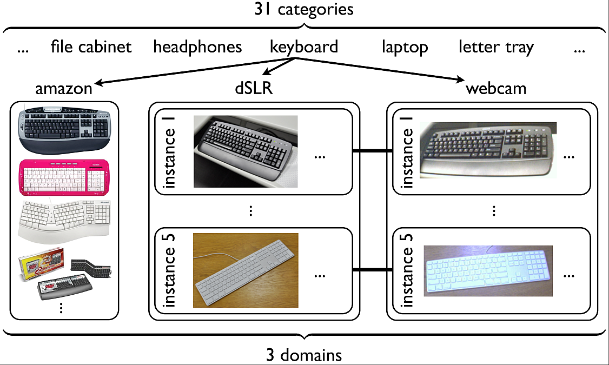

Domain Adaptation for Object recognition

Domain adaptation is an important emerging topic in computer vision. This project investigates domain shift in the context of object recognition. We introduced a method that adapts object models acquired in a particular visual domain to new imaging conditions by learning a transformation that minimizes the effect of domain-induced changes in the feature distribution. The transformation is learned in a supervised manner and can be applied to categories for which there are no labeled examples in the new domain. While we focus our evaluation on object recognition tasks, the transform-based adaptation technique we develop is general and could be applied to non-image data. We experimentally demonstrate the ability of our method to improve recognition on categories with few or no target domain labels and moderate to large changes in the imaging conditions.
Please visit the Domain Adaptation Project webpage for more details and software.
Database for Studying Effects of Domain Shift in Object Recognition

Effects of domain shift have been largely overlooked in previous object recognition studies. We collected a database that allows researchers to study, evaluate and compare solutions to the domain shift problem by establishing a multiple-domain labeled dataset and benchmark. In addition to the domain shift aspects, this database also proposes a challenging office environment category learning task which reflects the difficulty of real-world indoor robotic object recognition, and may serve as a useful testbed for such tasks. It contains a total of 4652 images of 31 categories originating from the following three domains: images from the web, digital SLR and webcam.
If you use the dataset in your research, please cite:
K. Saenko, B. Kulis, M. Fritz and T. Darrell, "Adapting Visual Category Models to New Domains" In Proc. ECCV, September 2010,Download the database: images, SURF features, SURF features and object ids, NEW DeCAF features.
The DeCAF features are deep convolutional neural network features computed using the framework in:
J. Donahue, Y. Jia, O. Vinyals, J. Hoffman, N. Zhang, E. Tzeng, T. Darrell. "DeCAF: A Deep Convolutional Activation Feature for Generic Visual Recognition" International Conference in Machine Learning (ICML), 2014.See also the Domain Adaptation Project webpage for more results on this dataset and links to software.
Papers:
B. Kulis, K. Saenko, and T. Darrell, "What You Saw is Not What You Get: Domain Adaptation Using Asymmetric Kernel Transforms" In Proc. IEEE Conference on Computer Vision and Pattern Recognition (CVPR), 2011.K. Saenko, B. Kulis, M. Fritz and T.Darrell, "Adapting Visual Category Models to New Domains" In Proc. ECCV, September 2010, Heraklion, Greece. [code] [more code].